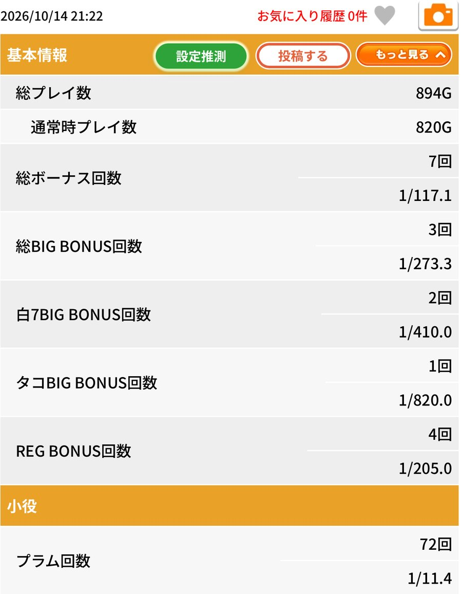
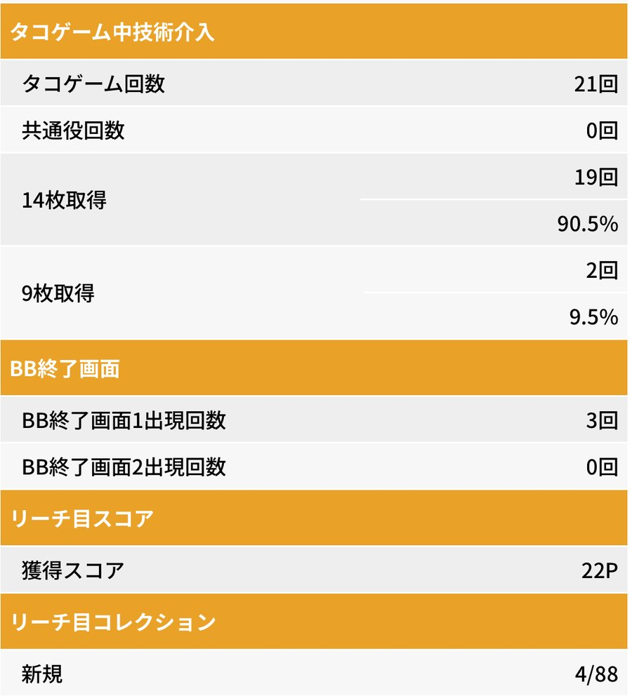
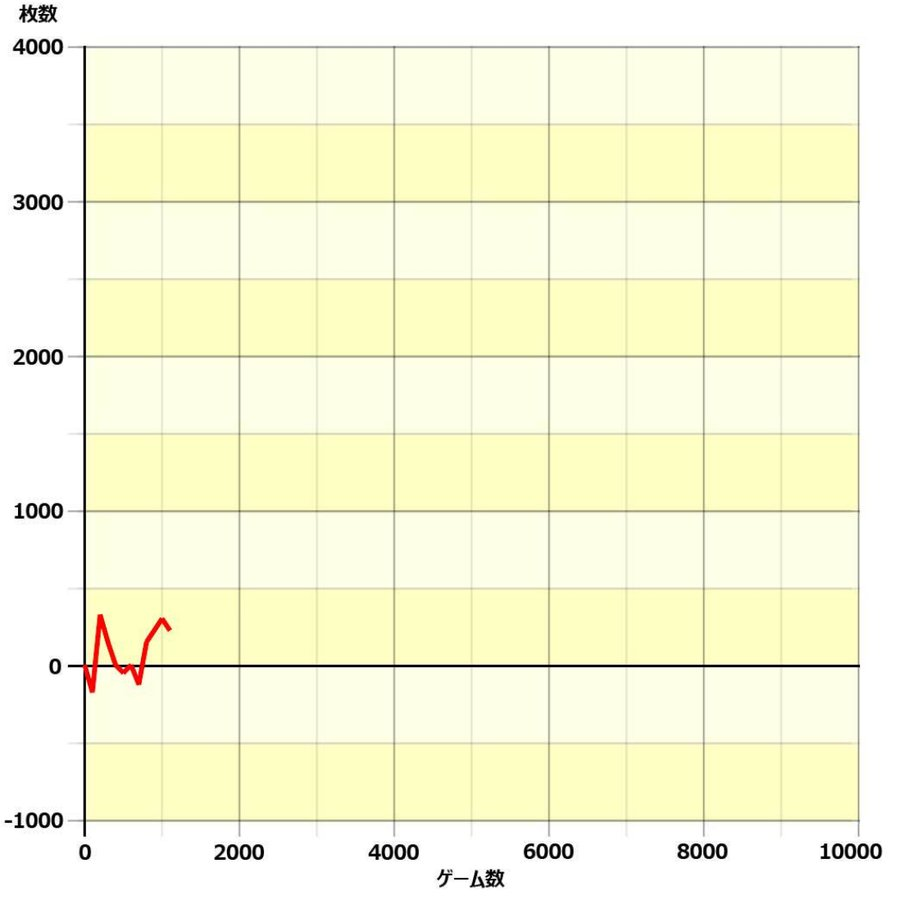
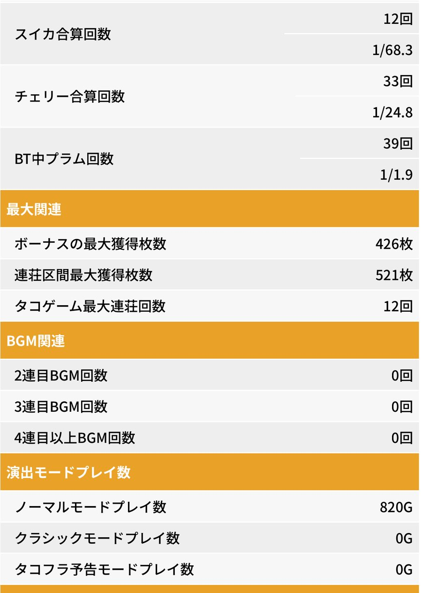

機種別実戦記録
タコスロ実戦｜通常820Gで＋249枚、14枚取得19/21回
2026年10月14日のタコスロ実戦。投資200枚・回収449枚で＋249枚。BIG3回・REG4回、技術介入の14枚取得は19/21回、90.5％でした。
投資200枚・回収449枚で、＋249枚
2026年10月14日のスマスロ タコスロ実戦。通常820GでBIG3回・REG4回、ボーナス合算は1/117.1でした。タコゲームの14枚取得は19/21回、表示率90.5％。短い実戦を＋249枚で終えました。
| 項目 | 結果 |
|---|---|
| 投資 | 200枚 |
| 回収 | 449枚 |
| 差枚 | ＋249枚 |
| 総プレイ数 | 894G |
| 通常時プレイ数 | 820G |
投資・回収は本人申告。差枚は449−200で計算しています。ボーナスの獲得枚数やユニメモのグラフ終点とは別の集計です。
通常820GでBIG3回・REG4回
BIGは白7が2回、タコBIGが1回。REGは4回で、ボーナスは計7回でした。表示確率の分母は総894Gではなく、通常820Gです。
| 項目 | 結果 |
|---|---|
| ボーナス合計 | 7回／1/117.1 |
| BIG合計 | 3回／1/273.3 |
| 白7BIG | 2回／1/410.0 |
| タコBIG | 1回／1/820.0 |
| REG | 4回／1/205.0 |

タップして拡大 ↗14枚取得は19/21回、90.5％
タコゲームは21回、共通役は0回。14枚取得19回・9枚取得2回で、今回は21回すべてが取得結果の分母になっています。ボーナスの当たり方と、技術介入の成績を分けて残します。
| 項目 | 結果 |
|---|---|
| タコゲーム | 21回 |
| 共通役 | 0回 |
| 14枚取得 | 19回／90.5％ |
| 9枚取得 | 2回／9.5％ |
| タコゲーム最大連荘 | 12回 |

タップして拡大 ↗グラフはプラス域で終了
グラフにはマイナス域へ下がる場面があり、終点はプラス域です。グラフの目盛りから正確な差枚を読み取ったものではなく、最終収支は本人の投資・回収記録による＋249枚です。

タップして拡大 ↗小役・終了画面などの詳細
小役・最大獲得・モード・BGM・終了画面を見る
| 項目 | 結果 |
|---|---|
| プラム | 72回／1/11.4 |
| スイカ合算 | 12回／1/68.3 |
| チェリー合算 | 33回／1/24.8 |
| BT中プラム | 39回／1/1.9 |
| ボーナス最大獲得 | 426枚 |
| 連荘区間最大獲得 | 521枚 |
| ノーマルモード | 820G |
| クラシックモード／タコフラ予告モード | 各0G |
| 2連目／3連目／4連目以上BGM | 各0回 |
| BB終了画面1／画面2 | 3回／0回 |
| リーチ目スコア | 22P |
| リーチ目コレクション（新規） | 4/88 |

タップして拡大 ↗収支と設定評価は分けて振り返る
今回は＋249枚で終了し、14枚取得率は90.5％でした。ただし通常820Gの結果だけで設定を断定することはできません。BB終了画面番号の意味や、BGMの回数から設定を推定することもしません。
個々の当選ゲーム数・契機、実戦開始時刻、店舗、貸出・交換条件は記録がないため補っていません。円換算や詳しい当選順序も示せません。
記録の出どころ
投資200枚・回収449枚はシュウ３の申告。ゲーム数・ボーナス・小役・技術介入の数値は、2026年10月14日分のユニメモ画像4枚から確認しています。10月12日の別実戦データは今回の集計に含めていません。